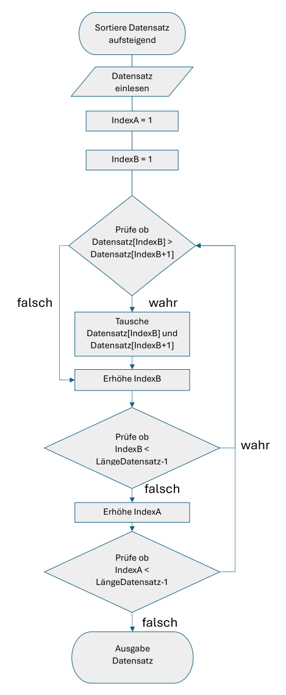
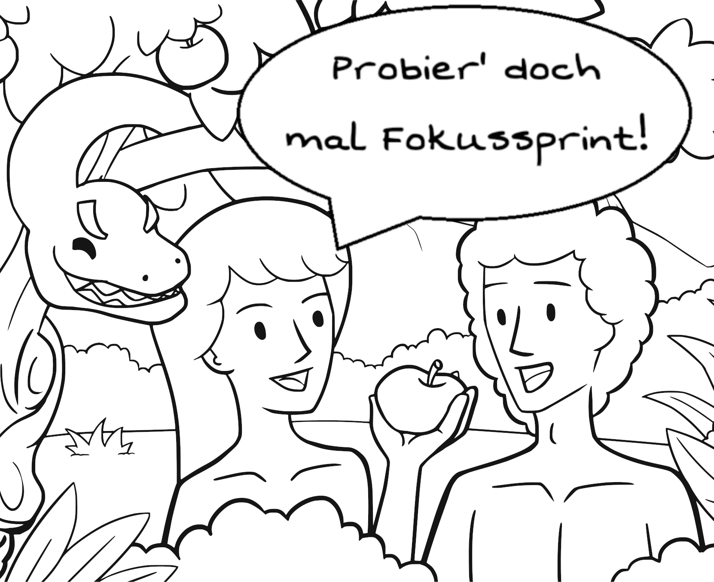
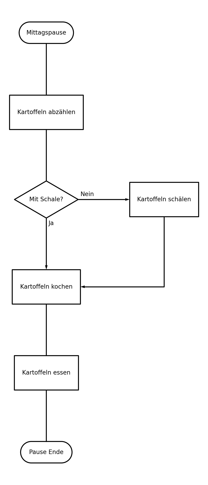
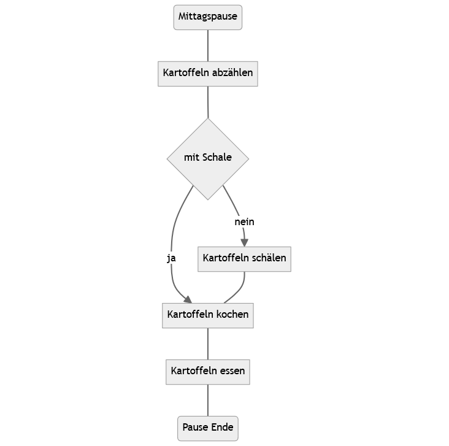
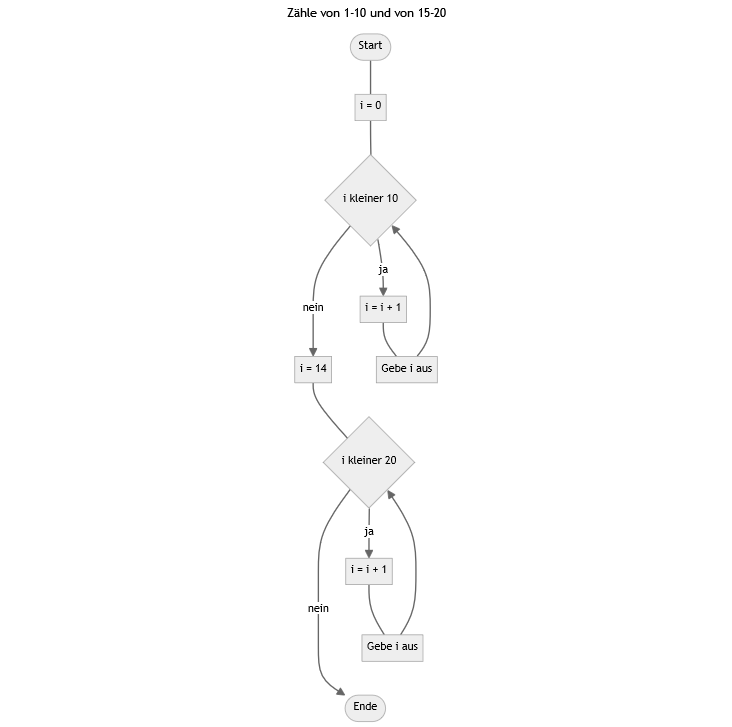

Werkzeugbaustein Pseudocode

Bausteine Computergestützter Datenanalyse von Lukas Arnold, Simone Arnold, Florian Bagemihl, Matthias Baitsch, Marc Fehr, Maik Poetzsch und Sebastian Seipel. Werkzeugbaustein Pseudocode von Maik Poetzsch ist lizensiert unter CC BY 4.0. Das Werk ist abrufbar auf GitHub. Ausgenommen von der Lizenz sind alle Logos und anders gekennzeichneten Inhalte. 2024
Zitiervorschlag
Arnold, Lukas, Simone Arnold, Matthias Baitsch, Marc Fehr, Maik Poetzsch, und Sebastian Seipel. 2024. „Bausteine Computergestützter Datenanalyse. Werkzeugbaustein Pseudocode“. https://github.com/bausteine-der-datenanalyse/w-pseudocode.
1 Voraussetzungen
Für die Bearbeitung dieses Bausteins bestehen keine Voraussetzungen. Die Bearbeitungszeit beträgt je nach Umfang der bearbeiteten Übungsaufgaben circa 120 bis 300 Minuten.
Während der Bearbeitung des Bausteins können Flussdiagramme unter anderem mit Python oder R erstellt werden. Dazu werden folgende Bibliotheken benötigt:
Python: Schemdraw und/oder graphviz. Zur Ausführung von Graphviz wird außerdem eine lokale Installation des Programms Graphviz benötigt.
R: DiagrammeR
Am Ende des Bausteins besteht die Möglichkeit, ein Programm zur Überprüfung einer Börsenstrategie zu entwickeln. Zur Veranschaulichung wird ein Auszug aus der von Robert Shiller erstellten Datei ie_data.xls mit historischen Börsenkursen des S&P 500 verwendet. Die Datei kann unter https://shillerdata.com/ bezogen werden.
2 Lernziele
In diesem Baustein lernen Sie, mit Hilfe von Pseudocode (komplexe) Aufgabenstellungen zu strukturieren und Schritt für Schritt ein Programm für die computergestützte Datenanalyse zu entwickeln. Außerdem lernen Sie, den Programmablauf für das eigene Verständnis und den Austausch mit Dritten in Form eines Flussdiagramms zu visualisieren.
Wenn Sie dieses Modul durchgearbeitet haben, können Sie …
die Entwicklung von Pseudocode als Kreativitätstechnik einsetzen,
ein Programm in Pseudocode beschreiben,
ein Programm in abgegrenzte Zwischenschritte aufteilen und diese in eine zweckmäßige Reihenfolge bringen,
die Abhängigkeiten zwischen den Zwischenschritten beschreiben,
die Voraussetzungen für die Ausführung jedes Zwischenschritts und des gesamten Programms benennen sowie
den Programmablauf als Flussdiagramm visualisieren.
Schlagworte: Ideen entwickeln, Programmbeschreibung, Pseudocode, Programmablaufplan, DIN 66001
3 Was ist Pseudocode?

Toast Dining Eating von OpenClipart-Vectors ist lizensiert unter Pixabay Content License. Das Werk ist abrufbar auf Pixabay.
Denken Sie an die Zubereitung eines Festtagsmahls. Sie haben im Internet ein Rezept gefunden, alle Zutaten von der Zutatenliste eingekauft und beginnen entsprechend der angegebenen Zubereitungszeit vor der Ankunft Ihrer Gäste zu kochen. Klingt gut, oder? Nun, dieses Vorgehen verspricht hungrig wartende Gäste, denn Rezepte sind häufig keine fertige Schritt-für-Schritt-Anleitung, sondern erfordern einige Vorarbeit:
Mal fehlen Zutaten auf der Zutatenliste, mal bleibt eine zu besorgende Zutat im Rezept unerwähnt und am Ende übrig. Im vierten Schritt ruht der Teig bereits seit zwei Stunden im Kühlschrank und der Ofen ist schon auf 250 Grad vorgeheizt. Eine vollständige Aufgabenbeschreibung erfordert Vorbereitung: Nur wer alle Abhängigkeiten kennt, wird pünktlich fertig.
In der Küche gilt eine eigene Fachsprache: Wissen Sie, was blanchieren bedeutet, wieso selbst sauberes Gemüse geputzt werden soll, wann Nudeln al dente sind oder ob die Soße erst lichterloh brennen sollte, damit man sie ablöschen kann? Falls nicht, ist zunächst etwas Übersetzungsarbeit in eine für Sie verständliche Sprache gefragt.
Wer kein Messer hat, kann kein Brot schneiden: Die Zutaten sind nicht alles, zu einem gelungenen Gericht gehört auch das richtige Werkzeug. Haben Sie alles in der Küche, was Sie zur Zubereitung brauchen?
Kurz: Sie brauchen einen eigenen Plan – nicht nur beim Kochen, sondern auch bei der computergestützten Datenanalyse. Denn auch die Datenanalyse erfolgt selten linear. Stattdessen wechseln sich Schritte zur Organisation, Visualisierung, Auswertung und Weiterverarbeitung von Daten ab. Dazu steht eine Vielzahl unterschiedlicher Programme mit eigener Syntax zur Auswahl. Oder ist eine selbst geschriebene Funktion besser geeignet? Häufig liegen Daten in unterschiedlichen Formaten vor und müssen für die Verwendung spezialisierter Programme transformiert werden. Dies sind typische Herausforderungen der Datenanalyse, die durch eine gute Planung aufgefangen werden können. Bei der Planung hilft Ihnen Pseudocode.
Pseudocode beschreibt ein Programm und informatische Konzepte in einer leicht verständlichen, alltäglichen Sprache. Die Entwicklung von Pseudocode kann sowohl als Kreativitätstechnik als auch als Schablone zur strukturierten Lösung von Aufgabenstellungen genutzt werden. Pseudocode erlaubt es, sich zunächst auf die konzeptionelle Lösung einer Aufgabenstellung und die Planung des Programmaufbaus zu fokussieren. Dies kann sinnvoll sein, um durch die Unterteilung des Programms in Zwischenschritte die Entwicklung zu vereinfachen, benötigte Programme, Pakete und Methoden zu identifizieren oder den Arbeitsaufwand abzuschätzen.
Pseudocode ist auch ein Instrument, um sich mit Dritten über ein Programm auszutauschen, zum Beispiel um ein Problem im Code zu erörtern. Denn Pseudocode setzt keine Kenntnis einer bestimmten Programmiersprache voraus und ist intuitiv verständlich. Zur Unterstützung der Kommunikationsfunktion von Pseudocode kann dieser zum Beispiel als Flussdiagramm visualisiert werden.
Pseudocode beschreibt einen Lösungsweg für informatische Aufgabenstellungen in formalisierter Alltagssprache statt mit den Ausdrücken und der Syntax einer Programmiersprache. Das Präfix pseudo stammt aus dem Griechischen und bedeutet falsch oder nur so aussehen als ob. Pseudocode ist ‚falscher‘ Programmcode, der mit natürlicher Sprache gebildet wird. (AAU 2019) Pseudocode ist darüber hinaus auch ein Kommunikationsmittel, um sich mit anderen über informatische Probleme und deren Lösung auszutauschen (z. B. Kommiliton:innen, Betreuer:innen).
Pseudocode von einfach bis ausführlich
In welcher Form und wie detailliert Sie Pseudocode formulieren, ist abhängig von Ihrem Kenntnisstand und Ihrem Ziel: Für die Strukturierung Ihres Programms in aufeinanderfolgende Zwischenschritte und die Identifizierung von Abhängigkeiten ist eine einfache Auflistung von Arbeitsschritten ausreichend. Für die Entwicklung eines Algorithmus sowie die Identifizierung von benötigten Methoden (z. B. Schleifen) und Werkzeugen (z. B. spezialisierte Pakete) wird es erforderlich sein, Programmanweisungen detaillierter zu beschreiben. Eine ausführliche Darstellung hilft Ihnen zum Beispiel, wiederkehrende Arbeitsschritte zu identifizieren, die in eine Funktion ausgelagert werden können. Für die Präsentation Ihres Programms auf einer Fachtagung oder die Dokumentation in einem Benutzer:innenhandbuch kann ein Flussdiagramm zweckmäßig sein.
Programmanweisung mit sprechendem Namen
SortiereAufsteigend
Anweisungsblock in Alltagssprache
SortiereAufsteigend
DurchlaufeDatensatz (LängeDatensatz - 1) mal # Anzahl Wiederholungen
Von Anfang bis (LängeDatensatz - 1) # Paarweise Vergleiche
Vergleiche Wert und Nachfolger
WENN Wert größer als Nachfolger DANN
Vertausche Wert und Nachfolger
AusgabeDatensatz Anweisungsblock im Stil und mit Begriffen der Programmierung
SortiereAufsteigend
WENN LängeDatensatz > 1 DANN
VON Datensatz[IndexA = 1] BIS Datensatz [IndexA = LängeDatensatz - 1] TUE # Anzahl Schleifendurchläufe
VON Datensatz[IndexB = 1] BIS Datensatz [IndexB = LängeDatensatz - 1] TUE # Paarweise Vergleiche
WENN Datensatz[IndexB] > Datensatz[IndexB + 1] DANN
Vertausche(Datensatz[IndexB], Datensatz[IndexB + 1])
Schreibe(Datensatz[IndexB], nach = Zwischenlager)
Schreibe(Datensatz[IndexB + 1], nach = Datensatz[IndexB])
Schreibe(Zwischenlager, nach = Datensatz[IndexB + 1])
WENN IndexB < LängeDatensatz - 1 DANN
Erhöhe IndexB
WENN IndexA < LängeDatensatz - 1 DANN
Erhöhe IndexA
AusgabeDatensatz
Flussdiagramm von Marc Sönnecken und Maik Poetzsch
4 Pseudocode erstellen
Das im Folgenden vorgestellte Schema unterstützt Sie dabei, Ideen zu entwickeln, ein Programm zu beschreiben und den Programmablauf zu visualisieren. Pseudocode hilft Ihnen, Ihr Programm sowie die benötigten Werkzeuge und Methoden in einer für Sie und Dritte verständlichen Weise zu beschreiben. Wie Sie Pseudocode verfassen, ist eine individuelle Angelegenheit, denn für die Erstellung von Pseudocode gibt es nur wenige Regeln. Pseudocode soll vor allem Ihnen helfen, einen Lösungsweg für eine Aufgabenstellung zu entwickeln. Pseudocode ist dann ‚richtig‘ geschrieben, wenn er Ihnen hilft:
Ihre Gedanken zu fokussieren,
eine Aufgabenstellung für Sie nachvollziehbar zu beschreiben,
die Aufgabenstellung in abgegrenzte Teilaufgaben zu untergliedern,
für die Teilaufgaben eine Lösungsvorschrift (Algorithmus) zu entwickeln,
benötigte Methoden und Werkzeuge zu identifizieren,
Ihre Lösungsvorschriften als ein Programm aufeinanderfolgender Arbeitsschritte zu beschreiben,
den Zeitaufwand für die Umsetzung abzuschätzen sowie
sich mit Dritten über Ihr Programm auszutauschen.
4.1 Übungsaufgaben
Für die Bearbeitung dieses Bausteins stehen zwei Übungsaufgaben zur Auswahl. Die Übungsaufgaben sprechen auch Studierende ohne Vorkenntnisse in der Datenanalyse an und verdeutlichen Teilaspekte der Programmentwicklung. Am besten eignet sich jedoch ein eigenes Projekt, das Sie bearbeiten möchten. Dazu haben Sie im Reiter “Eigenes Projekt” die Möglichkeit, eine eigene Aufgabenstellung zu formulieren.
ohne Vorkenntnisse Datenanalyse: Hefezopf backen
Lernziele: Aufgabenstellung in aufeinanderfolgende Arbeitsschritte untergliedern, Arbeitsschritte vollständig beschreiben, Abhängigkeiten und Voraussetzungen identifizieren (benötigte Werkzeuge identifizieren, Zeitaufwand schätzen)mit Vorkenntnissen Datenanalyse: Vitamin C bei Meerschweinchen
Lernziele: Datenanalyse in Pseudocode beschreiben.
Hier können Sie die Aufgabenstellung bzw. das Ziel Ihres Projekts festhalten. Bitte beachten Sie, dass Ihr Text nicht gespeichert wird.
Ihre Freundin Lisa schickt Ihnen ein Rezept, dass Sie im Internet gefunden hat. Sie schreibt, dass Sie morgen schon eine Stunde früher zum geplanten Treffen kommen kann, um vorher gemeinsam mit Ihnen zu backen – zu zweit würde man schon schneller fertig werden als in den im Rezept angegebenen 65 Minuten. Lisa fragt auch, ob Sie noch Zutaten mitbringen soll.
Wie antworten Sie Lisa? Modellieren Sie den Backprozess.
Das folgende Rezept wurde von Anna-Lena erstellt und ist abrufbar unter https://www.einfachbacken.de/rezepte/hefezopf.
Zarter Hefezopf
Arbeitszeit 40 Min.
Backen 25 Min.
| Zutaten | |
|---|---|
| 250 ml | Milch |
| 475 g | Weizenmehl (Type 405) |
| 60 g | Zucker |
| ½ Würfel | frische Hefe (ca. 21 g) |
| 50 g | weiche Butter (Zimmertemperatur) |
| 1 Prise | Salz |
| 1 | Ei (Gr. M) |
| etwas Milch zum Bestreichen | |
| etwas Hagelzucker zum Bestreuen | |
| etwas Mehl zur Teigverarbeitung |
1. Schritt
250 ml Milch, 475 g Weizenmehl (Type 405), 1 Prise Zucker, ½ Würfel frische Hefe (ca. 21 g)
Milch erwärmen bis sie lauwarm ist. Mehl in eine Schüssel sieben. Eine Mulde darin bilden und die Hefe in die Mulde bröseln. 3 EL von der lauwarmen Milch mit 1 Prise Zucker vermischen und über die Hefe in der Mulde gießen. Mit einem Löffel die Hefe-Milchmischung etwas vermischen (noch nicht das Mehl einkneten). Die Schüssel mit einem Geschirrhandtuch abdecken und an einem warmen Ort ca. 15 Min. gehen lassen.
2. Schritt
1 Ei (Gr. M), 60 g Zucker, 1 Prise Salz, 50 g weiche Butter (Zimmertemperatur)
Ei, restliche Milch, restlichen Zucker und Salz in die Schüssel geben und zusammen mit der Hefemischung und dem Mehl 3 Min. auf niedriger Stufe, dann ca. 5 Min. auf hoher Stufe mit den Knethaken des Rührgeräts verkneten. Butter in Stücken nach und nach unterkneten. Damit der Teig später gut aufgeht, sollte der Teig mindestens 5 Min. kräftig geknetet werden. Sonst kann der Teig später zusammenfallen oder klebrig sein!
3. Schritt
etwas Mehl zur Teigverarbeitung
Schüssel mit dem Teig nochmals mit einem Geschirrhandtuch abdecken und weitere 60 Min. an einem warmen Ort gehen lassen. Dann den[ ]Teig auf eine bemehlte Arbeitsfläche geben und in drei Teile teilen. Die Teigstücke jeweils zu einer langen Wurst mit 40 cm Länge rollen. Teigsträhnen zu einem Zopf flechten. Die Enden miteinander verdrehen und unter den Zopf legen, damit sie einen schönen Abschluss bilden. Zopf auf ein mit Backpapier belegtes Blech legen und mit einem Geschirrhandtuch abdecken. Nochmals 45 Min. gehen lassen.
4. Schritt
etwas Milch zum Bestreichen, etwas Hagelzucker zum Bestreuen
Währenddessen den Backofen auf 200 Grad Ober-/ Unterhitze (Umluft: 180 Grad) vorheizen. Zopf mit etwas Milch bestreichen und mit Hagelzucker bestreuen. Zopf schließlich im vorgeheizten Ofen ca. 15-20 Minuten leicht bräunlich backen. Vollständig auskühlen lassen. Der Zopf kann auch wunderbar eingefroren werden.
In einer Gruppe von 60 Meerschweinchen wurde die Länge der zahnbildenden Zellen (Odontoblasten) in Micron gemessen (len). Den Tieren wurde zuvor Vitamin C in Form von Ascorbinsäure (VC) oder Orangensaft (VC) verabreicht (supp). Die Meerschweinchen erhielten Dosen von 0.5, 1 oder 2 Milligramm Vitamin C pro Tag (dose). (Crampton 1947)
Welche Wirkung hat Vitamin C auf das Zahnwachstum von Meerschweinchen? Erläutern Sie Ihr Vorgehen mit Hilfe von Pseudocode oder mit Hilfe eines Flussdiagramms, um den Effekt der Verabreichungsart und der Dosis zu bestimmen.
| # | len | supp | dose |
|---|---|---|---|
| 1 | 4.2 | VC | 0.5 |
| 11 | 16.5 | VC | 1 |
| 21 | 23.6 | VC | 2 |
| 31 | 15.2 | OJ | 0.5 |
| 41 | 19.7 | OJ | 1 |
| 51 | 25.5 | OJ | 2 |
Wenn Sie sich den vollständigen Datensatz ansehen möchten, können Sie diesen in R mit ToothGrowth aufrufen oder den Datensatz hier herunterladen: ToothGrowth.csv
4.2 Mit EVA zum Fokussprint

Adam Bible Nature von CCXpistiavos ist lizensiert unter Pixabay Content License. Das Werk ist abrufbar auf Pixabay. Die Sprechblase wurde ergänzt.
Manchmal ist aller Anfang schwer. Der erste Schritt zur Programmentwicklung besteht in der Ideensammlung: Was soll genau getan werden, welche Schritte sind dafür erforderlich, was kann bereits erledigt werden, was muss noch vorbereitet oder recherchiert werden? Wenn Sie bereits eine gute Vorstellung von der Aufgabenlösung haben, können Sie diesen Schritt überspringen.
Der Fokussprint (Scheuermann 2016) ist eine schnelle Schreibdenkübung, um einen Einstieg ins Schreiben zu einem bestimmten Thema zu finden. Die Übung kann als Kreativitätstechnik für den Einstieg in ein Thema, aber auch zwischendurch als Denkhilfe eingesetzt werden. Es geht dabei darum, mit einem hohen Schreibtempo drauflos zu schreiben. Dadurch schreiben Sie nahe an Ihrer inneren Sprache und Ihre Kreativität kann freien Lauf nehmen. (Scheuermann 2016, 74, 78)
Der Fokussprint wird in zwei Schritten durchgeführt: Der erste Schritt besteht in einer fünfminütigen Schreibphase. Formulieren Sie auf einem Blatt Papier oder am Computer die Aufgabenstellung oder das Problem, zu dem Sie Ihre Gedanken sammeln möchten. Hier können Sie sich mit einem Stichwort kurzfassen oder eine konkrete Frage formulieren. Stellen Sie sich einen Wecker auf 5 Minuten und beginnen mit dem Schnellschreiben auf dem vorbereiteten Blatt. Es gibt nur eine Regel: Wenn Sie bemerken, dass Ihre Gedanken vom Thema der Überschrift abschweifen, besinnen Sie sich auf das Thema, zum Beispiel, indem Sie die Aufgabenstellung erneut aufschreiben (einfach dort, wo Sie gerade schreiben). (Scheuermann 2016, 78)
Fokussprint
In diesem Textfeld können Sie Ihren Fokussprint durchführen. Bitte beachten Sie, dass Ihr Text nicht gespeichert wird. Also dann: 3, 2, 1 – schreiben Sie in eigenen Worten los!
Im zweiten Schritt erfolgt die Auswertung. Lesen Sie Ihren Fokussprint durch und markieren Sie, was Ihnen wichtig erscheint. Können Sie Zwischenschritte identifizieren? Wenn ja, markieren Sie diese und fügen Ergänzungen, Kommentare oder Fragen hinzu. (vgl. Scheuermann 2016, 78)
Zwischenschritte teilen eine komplexe Aufgabenstellung in überschaubare Arbeitspakete auf, die jeweils eine bestimmte Funktion im Programmablauf erfüllen (z. B. das Sortieren von Daten) oder ein bestimmtes Arbeitsergebnis erzeugen (z. B. eine Grafik). Ein Zwischenschritt ist also ein Unterprogramm und bei der Bildung von Zwischenschritten geht es somit darum, eine Aufgabenstellung in Teilaufgaben aufzuteilen und eine Vorstellung davon zu gewinnen, welche Arbeitsschritte in einem Unterprogramm ausgeführt werden müssen, um die Teilaufgabe zu lösen.
Die Bildung von Zwischenschritten dient vor allem der Komplexitätsreduktion. Ein zur Lösung einer abgegrenzten Teilaufgabe entwickeltes Unterprogramm hat zum einen den Vorteil, dass es leicht getestet werden kann, um Fehler zu finden und zu beheben. Zum anderen kann ein Unterprogramm wiederholt im Programmablauf aufgerufen werden, z. B. um die Lösung einer anderen, komplexeren Teilaufgabe zu vereinfachen.
Bei der Abgrenzung von Zwischenschritten können auch andere Kriterien als die erbrachte Funktion oder das produzierte Arbeitsergebnis sinnvoll sein, etwa nach dem Ort der Datenverarbeitung (z. B. an der Messstelle, am Arbeitsrechner, im Rechenzentrum) oder nach den verwendeten Werkzeugen (z. B. Mikrocontroller, Python, C++, manuelle Datenverarbeitung).
Hefezopf backen
Unterteilung nach Funktion: Vorbereiten der Zutaten, Verarbeiten der Zutaten, Backen
Unterteilung nach Arbeitsergebnissen: Milchmischung zubereiten, Hefemischung zubereiten, Rohteig zubereiten, Teigzopf formen, Zopf backen
Vitamin C bei Meerschweinchen
Unterteilung nach Funktion: Teildatensätze bilden, Datensatz auswerten, Datensatz darstellen, Flussdiagramm erstellen
Unterteilung nach Arbeitsergebnis: tabellierter Mittelwertvergleich, Boxplot für alle Teilgruppen, Mermaid Flussdiagramm
Das EVA-Prinzip hilft Ihnen, Zwischenschritte vollständig zu beschreiben. Das EVA-Prinzip ist ein Grundmuster der computergestützten Datenverarbeitung und steht für Eingabe, Verarbeitung und Ausgabe. Diese Schritte folgen aufeinander: Zuerst werden die Daten erfasst, dann erfolgt die Datenverarbeitung, zuletzt werden die Ergebnisse ausgegeben.
Eingabe: Welche Daten liegen als Eingabe vor? Welches Format haben die Daten?
Verarbeitung: Welche Arbeitsschritte müssen durchgeführt werden, um die beschriebene Ausgabe zu erreichen?
Ausgabe: Welches Ergebnis soll durch die Datenverarbeitung erzeugt werden? Welches Format hat die Ausgabe?
Fassen Sie zum Abschluss Ihren Fokussprint in einem Kernsatz zusammen, der das für Sie Wichtigste hervorhebt. Dies kann eine Feststellung, aber auch eine offene Frage, die Sie weiter verfolgen möchten, sein. Markieren Sie diesen Kernsatz zusätzlich. (Scheuermann 2016, 79)
Damit haben Sie den ersten Schritt zur Formulierung einer vollständigen Programmbeschreibung geschafft! Wenn Sie möchten, können Sie Ihre Gedanken zu einer noch offenen Frage oder zu einem Zwischenschritt mit einem erneuten Fokussprint vertiefen. Andernfalls folgt nun der nächste Schritt.
4.3 Programmbeschreibung in Pseudocode
Sie haben nun eine Vorstellung von Ihrem Lösungsweg, den Zwischenschritten, aus denen dieser besteht, und von ihrer Abfolge. Im zweiten Schritt wird Ihr Programm durch die Beschreibung mit Pseudocode formalisiert. Dazu werden Programmanweisungen zwar alltagssprachlich, aber im Stil und mit Begriffen der Programmierung formuliert. Dies bedeutet,
für Programmanweisungen sprechende Namen zu vergeben. In der Datenanalyse benutzte Anweisungen sind:
Daten importieren (import), z. B. HoleDatenVonOrt
Daten organisieren (tidy), z. B. SortiereAufsteigend
Daten transformieren (transform), z. B. BildeDurchschnitt
Daten visualisieren (visualise), z. B. ErzeugeHistogramm
Daten modellieren (model), z. B. ErzeugeLinearesModell
Daten exportieren (export), z. B. SpeicherePlot
(vgl. Wickham, Çetinkaya-Rundel, und Grolemund 2023, Kapitel Whole game)
den Programmablauf zu dokumentieren, indem
aufeinanderfolgende Programmanweisungen untereinandergeschrieben,
Blöcke von Programmanweisungen durch Einrückung und/oder Einklammerung kenntlich gemacht und
zusammenhängende Programmanweisungen in abgegrenzten Zwischenschritten gruppiert werden.
Programmanweisungen von erläuternden Teilen durch Kommentare zu trennen, indem
Kommentare durch Sonderzeichen gekennzeichnet, beispielsweise
// Kommentar,# Kommentar,%% Kommentaroder/* Kommentar */, undeinzelnen Arbeitsschritten vorangestellt (z. B. Kurzbeschreibung von Zwischenschritten nach EVA) und/oder innerhalb einer Zeile benutzt werden.
Komplexe Programmanweisungen mit informatischen Begriffen auszudrücken, ggf. in Anlehnung an die Begriffe und Syntax der von Ihnen gewählten Programmiersprache. Dies umfasst:
Fallunterscheidungen: Fallunterscheidungen machen die Ausführung von Programmanweisungen abhängig von einer oder von mehreren Bedingungen.
WENN A (kleiner, kleiner gleich, genau gleich, größer als, größer gleich, ungleich) B, DANN C, SONST D
WENN A B1 UND B2, DANN C
WENN A B1 ODER B2, DANN C
Schleifen: Schleifen wiederholen Programmanweisungen solange die Eintrittsbedingung gilt bzw. die Abbruchbedingung eintritt.
SOLANGE A, TUE C
VON A BIS B, TUE C
Funktionen: Funktionen bündeln Programmanweisungen, damit Programmteile mehrfach verwendet werden können. Funktionen sind eine Form von Unterprogrammen.
- FunktionTueXY(Argument 1, Argument 2, …)
Anweisung1
Anweisung2
…
# Eingabe: eindimensionaler, ordinaler Datensatz
# Verarbeitung: Prüfung ob Datensatz mindestens zwei Werte enthält
## falls nein: Fehlermeldung
## falls ja: aufsteigende Sortierung mit Bubblesort mit Kontrollstruktur für den äußeren Schleifendurchlauf
# Ausgabe: aufsteigend sortierter Datensatz
SortiereAufsteigend(Datensatz)
WENN LängeDatensatz > 1 DANN
# äußere Schleife
do_work = WAHR # Kontrollstruktur für die äußere Schleife
WENN do_work == WAHR DANN
VON Datensatz[IndexA = 1] BIS Datensatz [IndexA = LängeDatensatz - 1] TUE
do_work = FALSCH
# innere Schleife für paarweise Vergleiche
VON Datensatz[IndexB = 1] BIS Datensatz [IndexB = LängeDatensatz - 1] TUE
WENN Datensatz[IndexB] > Datensatz[IndexB + 1] DANN
Vertausche(Datensatz[IndexB], Datensatz[IndexB + 1])
Schreibe(Datensatz[IndexB], nach = Zwischenlager)
Schreibe(Datensatz[IndexB + 1], nach = Datensatz[IndexB])
Schreibe(Zwischenlager, nach = Datensatz[IndexB + 1])
do_work = WAHR # merke, wenn etwas vertauscht wurde
WENN IndexB < LängeDatensatz - 1 DANN
Erhöhe IndexB
WENN IndexA < LängeDatensatz - 1 DANN
Erhöhe IndexA
AusgabeDatensatz
SONST
Melde("Der Datensatz muss mindenstens zwei Elemente enthalten!")
Hinweis: Die manuelle Erhöhung der Zählindizes ist bei Programmiersprachen in der Regel nicht erforderlich und dient nur der besseren Verständlichkeit.
Mit der Formalisierung Ihres Programms in Pseudocode haben Sie eine intuitiv verständliche, vollständige Programmbeschreibung entwickelt. Im nächsten Schritt können Sie Ihr Programm grafisch darstellen.
Beschreiben Sie ein Programm, das von 1-10 und von 15 bis 20 zählt, in Pseudocode.
In diesem Textfeld können Sie Ihren Pseudocode schreiben. Bitte beachten Sie, dass Ihr Text nicht gespeichert wird.
i = 0
SOLANGE i kleiner als 10 TUE
erhöhe i um 1
Ausgabe i
i = 14
SOLANGE i kleiner als 20 TUE
erhöhe i um 1
Ausgabe iKarel The Robot
Wenn Sie die Anwendung informatischer Konzepte wie Fallunterscheidung oder Schleifen üben möchten, ist Karel The Robot einen Blick wert. Das Programm führt mit einer eigenen Pseudocode-Sprache in die Anwendung informatischer Kontrollstrukturen ein.
Eine Vorstellung des Programms, Hinweise zur Installation und Bedienung finden Sie auf der im vorherigen Absatz verlinkten GitHub-Seite oder auf dem YouTube-Kanal der Medienberatung Niedersachsen:
4.4 Programmablauf visualisieren
Lead 1 von CocoMaterial ist lizensiert unter CC0 1.0. Das Werk ist abrufbar auf CocoMaterial.
Eine anschauliche grafische Darstellung verhilft Pseudocode zu noch mehr Klarheit und unterstützt dadurch insbesondere den Austausch mit Dritten. Die grafische Darstellung eines Programms wird Programmablaufplan oder Flussdiagramm genannt. Die für einen Programmablaufplan verwendeten Symbole sind in der (DIN 1983) genormt. Die Formen werden auch als Knoten (nodes) bezeichnet, die Verbindungen als Kanten (edges).
flowchart TD A([Start / Stopp])
- Rechteck mit gerundeten Seiten (Nummer 6.4.1)
- Grenzstelle zur Umwelt, die Beginn und Ende einer Folge anzeigt und beispielsweise Herkunft oder Verbleib von Daten signalisiert.
flowchart TD A[Verarbeitung]
- Rechteck (Nummer 6.1.1)
- Verarbeitung einschließlich Ein-/Ausgabe
flowchart TD
A{Entscheidung}
B[Anweisung 1]
C[Anweisung 2]
A -->|wahr| B
A -->|falsch| C
- Raute (Nummer 6.1.2)
- Verzweigung/Entscheidung
flowchart TD subgraph Unterprogramm [Kaffee kochen] B[Filter einsetzen] --- C[Pulver einfüllen] --- D[Wasser einfüllen] --- E[Kaffeemaschine einschalten] end A[[Kaffee kochen]] A ~~~ Unterprogramm %% A ~~~ Unterprogramm = unsichtbare Verbindung zur Positionssteuerung
- Rechteck mit doppelten, vertikalen Linien (Nummer 7.2.4)
- Hinweis auf ein an anderer Stelle dokumentiertes Programm
flowchart TD
ID0([Beginn Kaffeepause]) --- A
A{durstig} -->|ja|C[[Kaffee kochen]] --- D[Kaffee trinken]
A -->|nein|E[warten]
D --- Z
E ---- Z
Z([Kaffepause Ende])
%% Kommentar: die Anzahl der Striche steuert die Position einer Zelle
- Verbindung (Nummer 6.3.1)
- Prozessketten werden mit Linien oder Pfeilen verbunden. Die Verbindungen sind von links nach rechts bzw. von oben nach unten orientiert, Abweichungen davon müssen mit Pfeilspitzen gekenzeichnet werden.
- Sind mehrere Ausgänge mit Bedingungen verknüpft, müssen diese durch Beschriftung an den Verbindungslinien kenntlich gemacht werden.
- Mehrere Verbindungen zu einem Sinnbild können zu einer Verbindung zusammengeführt werden. Sich kreuzende Verbindungslinien sollten aber vermieden werden. Diese stellen keine Zusammenführung dar. Anmerkung: Mermaid (und auch Graphviz) scheinen diese Funktion nicht zu beherrschen
(DIN 1983)
Die DIN 66001 definiert auch Sinnbilder zur Darstellung von Daten. Die Norm regelt aber für Programmablaufpläne: “Daten werden nicht dargestellt. Siehe Beispiel in Abschnitt A.2.” (DIN 1983, 2). Gleichwohl sind im Beispiel A.2 spezfische Typen von Daten dargestellt, beispielsweise manuell oder maschinell zu verarbeitende Daten (DIN 1983, 13–14).
Jedoch sind die in den Nummern 6.2.2 bis 6.2.10 definierten Sinnbilder für spezifische Datentypen nicht in allen Diagrammwerkzeugen vollständig verfügbar. Dies betrifft:
Graphviz (z. B. maschinell zu verarbeitende Daten entsprechend Nummer 6.2.2)
Mermaid (z. B. maschinell zu verarbeitende Daten entsprechend Nummer 6.2.2)
Bürosoftwarepaket LibreOffice (z. B. manuell zu verarbeitende Daten entsprechend Nummer 6.2.3)
In der Darstellung von Programmablaufplänen ist die Verwendung des Sinnbilds Nr. 6.2.1 Daten allgemein üblich.
- Daten (Nummer 6.2.1)
- Darstellung für Daten oder Datenträger allgemein
Werkzeuge zur Erstellung von Flussdiagrammen
Flussdiagramme können auf unterschiedliche Weise erstellt werden:
mit Stift und Papier,
mit Bürosoftwarepaketen wie LibreOffice,
mit spezialisierten Paketen wie DiagrammeR oder Schemdraw.
Der Funktionsumfang und die Syntax unterscheiden sich und jedes Werkzeug hat eigene Stärken. Mermaid, Graphviz und Schemdraw sind deklarative Zeichenwerkzeuge, mit denen Flussdiagramme (und andere Grafiken) geschrieben und graphisch umgesetzt werden können. Mermaid hat eine einfache, intuitive Syntax. Graphviz erlaubt mehr Gestaltungsmöglichkeiten (benötigt in Python aber eine lokale Systeminstallation). Das Python-Modul Schemdraw unterstützt eine an Pythoncode angelehnte Syntax und bietet einen einfachen Zugriff auf DIN-konforme Knoten und Kanten.
# Flussdiagramm mit Schemdraw und Graphviz in Python
## Schemdraw
import subprocess
subprocess.call(['pip', 'install', 'schemdraw'])
import schemdraw
from schemdraw.flow import *
with schemdraw.Drawing() as d:
# durchgehender Prozess in korrekter Reihenfolge von Start bis Ende
d+= Start().label("Mittagspause")
d+= Line().down()
d+= Box().label("Kartoffeln abzählen")
d+= Line().down()
d+= (mit_Schale := Decision(S = "Ja", E = "Nein").label("Mit Schale?"))
d+= Arrow().at(mit_Schale.S)
d+= (kochen := Box().label("Kartoffeln kochen"))
d+= Line().down()
d+= Box().label("Kartoffeln essen")
d+= Line().down()
d+= Start().label("Pause Ende")
# alternativer Ast der Verzweigung
d+= Arrow().right().at(mit_Schale.E)
d+= (schälen := Box().label("Kartoffeln schälen"))
d+= Wire("|-", arrow = "->").at(schälen.S).to(kochen.E) # .S + .E (oder andere Richtungsangaben) müssen gesetzt werden, |- definiert zunächst vertikale, rechtwinkelige Kante
d.draw()
# d.save("Kartoffeln.svg")
## Graphviz
## benötigt eine lokale Installation von Graphviz https://graphviz.org/download/
import subprocess
subprocess.call(['pip', 'install', 'graphviz']) # installiert das Modul graphviz
import graphviz
dot = graphviz.Digraph(name = "Kartoffeln")
### Start / Ende
dot.node(name = "Mittagspause", shape = "Mrecord") # optional label
dot.node(name = "Pause Ende", shape = "Mrecord")
### Anweisungen
dot.node(name = "Kartoffeln abzählen", shape = "box")
dot.node(name = "Kartoffeln schälen", shape = "box")
dot.node(name = "Kartoffeln kochen", shape = "box")
dot.node(name = "Kartoffeln essen", shape = "box")
### Entscheidung
dot.node(name = "mit Schale", shape = "diamond")
### Kanten
dot.edge("Mittagspause", "Kartoffeln abzählen", arrowhead = "none")
dot.edge("Kartoffeln abzählen", "mit Schale", arrowhead = "none")
dot.edge("mit Schale", "Kartoffeln kochen", label = "Ja")
dot.edge("mit Schale", "Kartoffeln schälen", label = "nein")
dot.edge("Kartoffeln schälen", "Kartoffeln kochen", arrowhead = "none")
dot.edge("Kartoffeln kochen", "Kartoffeln essen", arrowhead = "none")
dot.edge("Kartoffeln essen", "Pause Ende", arrowhead = "none")
dot.render("Kartoffeln.gv", cleanup = True, view = True)

# Flussdiagramm mit DiagrammeR in R
install.packages("DiagrammeR")
library("DiagrammeR")
## Mermaid
DiagrammeR::mermaid("
graph TD
0(Mittagspause)
A[Kartoffeln abzählen]
B{mit Schale}
D[Kartoffeln kochen]
E[Kartoffeln essen]
S[Kartoffeln schälen]
Z(Pause Ende)
0---A
A---B
B-->|ja|D
B-->|nein|S
S---D
D---E
E---Z
")
## Graphviz
DiagrammeR::grViz("
graph Kartoffeln {
# defining nodes
node [shape = Mrecord]
Mittagspause; Pause_Ende
node [shape = box]
Kartoffeln_abzählen
Kartoffeln_schälen
Kartoffeln_kochen
Kartoffeln_essen
node[shape = diamond]
mit_Schale
# defining edges
Mittagspause -- Kartoffeln_abzählen
Kartoffeln_abzählen -- mit_Schale
mit_Schale -- Kartoffeln_kochen[dir = forward label=ja]
mit_Schale -- Kartoffeln_schälen[dir = forward label=nein]
Kartoffeln_schälen -- Kartoffeln_kochen
Kartoffeln_kochen -- Kartoffeln_essen
Kartoffeln_essen -- Pause_Ende
}
")
Erstellen Sie ein Flussdiagramm für ein Programm, das von 1-10 und von 15 bis 20 zählt.
i = 0
SOLANGE i kleiner als 10 TUE
erhöhe i um 1
Ausgabe i
i = 14
SOLANGE i kleiner als 20 TUE
erhöhe i um 1
Ausgabe i---
title: Zähle von 1-10 und von 15-20
---
flowchart TD
Start([Start])
initialisieren1[i = 0]
initialisieren2[i = 14]
Schleife1{i kleiner 10}
Schleife2{i kleiner 20}
Erhöhe1[i = i + 1]
Erhöhe2[i = i + 1]
Ausgabe1[Gebe i aus]
Ausgabe2[Gebe i aus]
Ende([Ende])
Start --- initialisieren1
initialisieren1 --- Schleife1
Schleife1 -->|nein| initialisieren2 --- Schleife2
Schleife2 -->|ja| Erhöhe2 --- Ausgabe2 --> Schleife2
Schleife2 -->|nein| Ende
Schleife1 -->|ja| Erhöhe1 --- Ausgabe1 --> Schleife1
%% unsichtbare Verbindungen zur Positionssteuerung
Ausgabe1 ~~~ Schleife2
Ausgabe2 ~~~ Ende

5 Musterlösungen
Für die Zubereitung des Hefezopfes werden mindestens drei Stunden benötigt. Der Teig (bzw. die Hefemischung) muss verteilt über mehrere Schritte insgesamt 120 Minuten gehen und nach dem Backen auskühlen. Aufgrund der langen Wartezeiten können die Arbeitsschritte von einer Person durchgeführt werden, eine parallele Bearbeitung durch eine zweite Person spart nur wenig Zeit ein. Lisa darf natürlich trotzdem eine Stunde früher vorbei kommen, aber dann ruht der Teig zum letzten Mal, bäckt im Ofen oder kühlt bereits aus. Zutaten mitbringen muss sie nicht, die Zutatenliste ist vollständig.
# Zwischenschritt 1 - ca. 25 Minuten
## Eingabe: 250 ml Milch, 475 g Weizenmehl, 1 Prise Zucker, ½ Würfel Hefe
## Werkzeug: Schüssel, Sieb, Topf, Löffel, Geschirrtuch
## Verarbeitung: Hefe in gezuckerter Milch lösen
## Ausgabe: Hefemischung, Mehl
BereiteHefemischung
MehlSieben # benutze Sieb
MehlHinzufügen
MuldeBilden # Mulde im Mehl bilden
HefeZerbröseln
HefeHinzufügen
MilchVorbereiten # benutze Topf
**Solange** Milch < lauwarm **Tue**
MilchErwärmen
ZuckerHinzufügen
Verrühren # Milch und Zucker mit Löffel vermischen
MilchHinzufügen
Verrühren # Hefe und Milchmischung mit Löffel vermischen
TeigGeht(Zeit = 15 Minuten)
SchüsselAbdecken # benutze Geschirrtuch
WarmStellen
# Zwischenschritt 2 - ca. 75 Minuten
## Eingabe: Hefemischung, Mehl, 1 Ei, 60 g Zucker, 1 Prise Salz, 50 g Butter
## Werkzeug: Schüssel, Rührgerät, Messer, Geschirrtuch
## Verarbeitung: Ei, Milch, Salz, Butter hinzugeben und verkneten
## Ausgabe: Rohteig
BereiteTeig
ButterWürfeln # benutze Messer
# Ausgabe: n Butterwürfel
**SOLANGE** TeigGeht **TUE**
Warten
EiHinzufügen
MilchHinzufügen
ZuckerHinzufügen
SalzHinzufügen
Kneten(Zeit = 3 Min, Stufe = niedrig) # benutze Rührhaken
Kneten(Zeit = 5 Min, Stufe = hoch) # benutze Rührhaken
ButterHinzufügen
**SOLANGE** n > 0 **TUE**
Kneten(Stufe = hoch)
ButterwürfelHinzufügen
n = n - 1
Kneten(Zeit = 5 Min, Stufe = hoch) # benutze Rührhaken
TeigGeht(Zeit = 60 Minuten)
SchüsselAbdecken # benutze Geschirrtuch
WarmStellen
# Zwischenschritt 3 - ca. 55 Minuten
## Eingabe: Rohteig, etwas Mehl
## Verarbeitung: Rohteig zu Teigzopf verarbeiten
## Werkzeug: Blech, Backpapier, Geschirrtuch
## Ausgabe: Teigzopf
ZopfFormen
BackpapierAufBlechLegen
ArbeitsflächeBemehlen
TeigAufArbeitsflächeLegen
TeigTeilen(Stücke = 3)
# Ausgabe = n Teigstücke
TeigRollen
**SOLANGE** n > 0 **TUE**
TeigstückRollen(Länge = 40 cm)
n = n - 1
ZopfErzeugen
RollenFlechten
EndenVerdrehen
ZopfAufBackpapierLegen
TeigGeht(Zeit = 45 Minuten)
ZopfAbdecken # benutze Geschirrtuch
WarmStellen
# Zwischenschritt 4 - ca. 40 Minuten
## Eingabe: Teigzopf, etwas Milch, etwas Hagelzucker
## Werkzeug: Pinsel, Ofen
## Verarbeitung: Zopf bestreichen, bestreuen und backen
## Ausgabe: Hefezopf (gebacken)
ZopfBacken
OfenVorheizen
**WENN** UmluftVerfügbar **DANN**
Modus = Umluft
Temperatur = 180 Grad
**SONST**
Modus = Ober- / Unterhitze
Temperatur = 200 Grad
ZopfMitMilchBestreichen # benutze Pinsel
ZopfMitHagelzuckerBestreuen
ZopfBacken
BlechInOfenStellen
**SOLANGE** Zopf < leicht bräunlich **TUE**
BlechImOfenLassen
BlechHerausholen
ZopfAuskühlen
**SOLANGE** Zopf > Zimmertemperatur **TUE**
Warten
# Schritt 1 – Datensatz einlesen
## Eingabe: URL
## Werkzeug: Browser
## Verarbeitung: Speichern der Rohdaten
## Ausgabe: kommaseparierte Datei ToothGrowth.csv
HoleDatensatzVonURL
DatensatzSpeichern
# Schritt 2 – Mittelwertvergleich
## Eingabe: ToothGrowth.csv
## Werkzeug: IDE
## Verarbeitung: Mittelwerte für Teildatensätze bilden
## Ausgabe: Tabelle der Mittelwerte nach Dosis und Verabreichungsmethode
ZeilennummernBestimmen
Zeilennummern(supp = OJ)
Zeilennummern(supp = VC)
Zeilennummern(dose = 0.5)
Zeilennummern(dose = 1)
Zeilennummern(dose = 2)
TeildatensätzeBilden # über Kriterium oder über Zeilennummern
TeildatensatzSupp = OJ
TeildatensatzDose = 0.5
TeildatensatzDose = 1
TeildatensatzDose = 2
TeildatensatzSupp = VC
TeildatensatzDose = 0.5
TeildatensatzDose = 1
TeildatensatzDose = 2
MittelwerteErmitteln
MittelwertLen(Datensatz)
MittelwerteTeildatensätze
MittelwertLen(TeildatensatzSupp = OJ & Dose = 0.5)
MittelwertLen(TeildatensatzSupp = OJ & Dose = 1)
MittelwertLen(TeildatensatzSupp = OJ & Dose = 2)
MittelwertLen(TeildatensatzSupp = VC & Dose = 0.5)
MittelwertLen(TeildatensatzSupp = VC & Dose = 1)
MittelwertLen(TeildatensatzSupp = VC & Dose = 2)
TabelleErstellen
Spalten = OJ, VC
Zeilen = Dosis
Zellen = MittelwerteLen
TabelleAusgeben
# Schritt 3 – graphische Darstellung
## Eingabe: ToothGrowth.csv
## Werkzeug: Funktion für Boxplot
## Verarbeitung: Boxplot nach Dosis und Methode erzeugen
## Ausgabe: Boxplots nach Dosis und Verabreichungsmethode
Boxplot(Len nach Dosis & Methode)
BoxplotErstellen
VerabreichungsmethodeFarblichUnterscheiden
LegendeEintragen
SpeichereBoxplot6 Das Wichtigste
In welcher Form und wie detailliert Sie Pseudocode formulieren, hängt von Ihrem Kenntnisstand und Ihrem Ziel ab. Die Entwicklung von Pseudocode kann als Kreativitätstechnik ohne formale Vorgaben eingesetzt werden, in detaillierter Form bei der Ausarbeitung einer algorithmischen Lösung helfen oder visuell in Form eines Flussdiagramms Ihre Kommunikation mit Dritten unterstützen.
7 Lernzielkontrolle
7.1 Kompetenzquiz
- Schreiben Sie ein Programm in Pseudocode, das alle geraden Zahlen bis 10 ausgibt.
- Fehler im Pseudocode finden.
Ein:e Freund:in zeigt Ihnen den Pseudocode eines Programms, das prüfen soll, ob Buchstaben groß oder klein geschrieben sind. Die Ausgabe klappt aber nur für klein geschriebene Buchstaben. Finden Sie den Fehler?
text = Eingabe("Bitte geben Sie Ihren Text ein.")
zeichen_liste = TeileZeichenweiseInListeAuf(text)
FÜR JEDES element IN zeichen_liste TUE
Wenn Dezimalwert(element) >= 97 UND Dezimalwert(element) <= 122 TUE
Schreibe("Das Zeichen ", element, "ist klein geschrieben.")
Wenn Dezimalwert(element) >= 65 UND Dezimalwert(element) <= 90 TUE
Schreibe("Das Zeichen ", element, "ist groß geschrieben.")
- Zeichnen Sie ein Flussdiagramm des korrekten Programms.
Lösung 1:
i = 1
SOLANGE i kleiner gleich 10
WENN i Modulo 2 gleich 0 TUE
Ausgabe i
Erhöhe i um 1Lösung 2: Die Prüfung der Bedingungen für groß geschriebenen Buchstaben (Dezimalwert(element) >= 65 UND Dezimalwert(element) <= 90) erfolgt im Anweisungsblock, wenn ein Buchstabe klein geschrieben ist (Dezimalwert(element) >= 97 UND Dezimalwert(element) <= 122 ). Der Wahrheitswert dieser Bedingung ist falsch, wenn ein Buchstabe groß geschrieben ist. Die folgenden Anweisungen werden deshalb nicht ausgeführt, wenn element einen Großbuchstaben enthält. Durch korrektes Einrücken kann das Problem gelöst werden.
text = Eingabe("Bitte geben Sie Ihren Text ein.")
zeichen_liste = TeileZeichenweiseInListeAuf(text)
FÜR JEDES element IN zeichen_liste TUE
Wenn Dezimalwert(element) >= 97 UND Dezimalwert(element) <= 122 TUE
Schreibe("Das Zeichen ", element, "ist klein geschrieben.")
# korrigierte Einrückung
Wenn Dezimalwert(element) >= 65 UND Dezimalwert(element) <= 90 TUE
Schreibe("Das Zeichen ", element, "ist groß geschrieben.")
Lösung 3:

7.2 Übungen
Börsenstrategie entwickeln
Sie möchten den möglichen Ertrag einer Turnaround-Strategie an der Börse bewerten. Ihre Idee besteht darin, einen Aktienindex zu kaufen, wenn dieser mindestens 30 Prozent vom Allzeithoch der letzten drei Jahre gefallen ist. Sie spekulieren mit Ihrer Strategie darauf, dass sich der Aktienindex wieder erholt und Sie durch den günstigen Einstieg eine bessere Rendite als bei regelmäßigen, kursunabhängigen Zukäufen erzielen. Der Vergleichszeitraum beträgt 30 Jahre (Beginn und Ende können Sie selbst festlegen).
Testen Sie Ihre Strategie anhand des S&P500.
Parameter: 5.000 Dollar Startkapital, über 30 Jahre monatlich zusätzlich 500 Dollar investierbares Kapital, Dividenden werden im Folgemonat reinvestiert bzw. bis zum nächsten Kursrückgang angespart, Strategie: Buy & Hold (keine Verkäufe), Kurseinbruch: 30 Prozent gegenüber Allzeithoch der letzten 3 Jahre.
Optional: In wie vielen 30-Jahresperioden wäre Ihre Turnaround-Strategie besser gewesen als stetiges Zukaufen?
Optional: Wie verändert sich das Verhältnis, wenn der Schwellenwert für den Kurseinbruch verändert wird (20 oder 40 Prozent)?
Ein Datensatz des S&P500 mit Monatsdaten von 1871 bis 2024 ist auf der Webseite von Robert Shiller verfügbar (Direktlink zur XLS-Datei).
Der Datensatz liegt in monatlicher Auflösung (Date) vor. Neben dem Kurs (Price) sind die ausgeschütteten Dividenden (Dividend) festgehalten.
Hinweis: Der Datensatz liegt als Exceldatei vor und wurde aus Gründen der Übersichtlichkeit leicht bearbeitet (Anpassung der Spaltennamen, Formatierung Spalte Date, Runden der Spalten Price und Dividend). Bitte beachten Sie, dass wenn Sie den Datensatz selbst abrufen, das Erscheinungsbild entsprechend abweicht.
| # | Date | Price | Dividend |
|---|---|---|---|
| 1 | 1871.01 | 4.44 | 0.26 |
| 2 | 1871.02 | 4.50 | 0.26 |
| 3 | 1871.03 | 4.61 | 0.26 |
| 4 | 1871.04 | 4.74 | 0.26 |
| 5 | 1871.05 | 4.86 | 0.26 |
| 6 | 1871.06 | 4.82 | 0.26 |
| 7 | 1871.07 | 4.73 | 0.26 |
| 8 | 1871.08 | 4.79 | 0.26 |
| 9 | 1871.09 | 4.84 | 0.26 |
| 10 | 1871.10 | 4.59 | 0.26 |
| 11 | 1871.11 | 4.64 | 0.26 |
| 12 | 1871.12 | 4.74 | 0.26 |
| 1828 | 2023.04 | 4121.47 | 68.38 |
| 1829 | 2023.05 | 4146.17 | 68.54 |
| 1830 | 2023.06 | 4345.37 | 68.71 |
| 1831 | 2023.07 | 4508.08 | 68.91 |
| 1832 | 2023.08 | 4457.36 | 69.11 |
| 1833 | 2023.09 | 4409.09 | 69.31 |
| 1834 | 2023.10 | 4269.40 | 69.64 |
| 1835 | 2023.11 | 4460.06 | 69.97 |
| 1836 | 2023.12 | 4685.05 | 70.30 |
| 1837 | 2024.01 | 4815.61 | 70.48 |
| 1838 | 2024.02 | 5011.96 | 70.65 |
| 1839 | 2024.03 | 5170.57 | 70.82 |